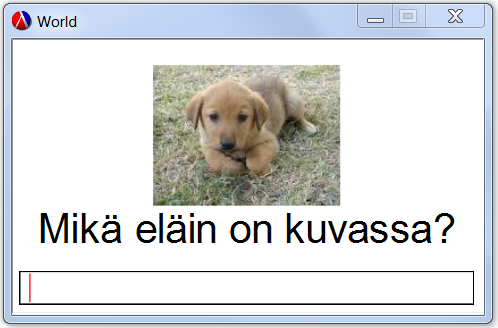
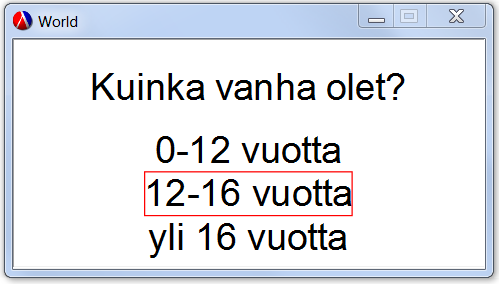
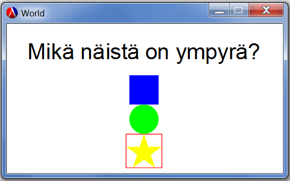

6.4
6 Display-Read
| (require teachpacks/display-read) | package: teachpacks |
Jotta Display-Read toimii DrRacket:ssa, sinun pitää asentaa teachpacks paketti. Katso asennusohjeet täältä. WeScheme:ssä ei tarvitse asentaa pakettia mutta kirjastolla on eri nimi: (require wescheme/dhnSHUnLTh)
Tässä osassa esitellään Display-Read -kirjasto, jonka avulla voi pyytää käyttäjää antamaan merkkijonon tai luvu, tai valitsemaan lukuja, merkkijonoja tai kuvia annetusta listasta. Kirjaston avulla voi myös esittää käyttäjälle ohjelman tulokset (luku, merkkijono tai kuva). Kirjaston avulla voi ohjelmoida yksinkertaisia interaktiivisia ohjelmia tai pelejä kuten "arvaa mitä lukua ajattelen".


